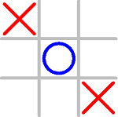

Click on the Image to run the Applet Demo (tested on FireFox/Windows only)


Let's Start with a 2-Player Console Non-OO Tic-Tac-Toe
Let us start with a 2-player console (non-graphics) version of Tic-Tac-Toe, where player 'X' and player 'O' enter their moves successively, as shown below:
Player 'X', enter your move (row[1-3] column[1-3]): 2 2
| |
-----------
| X |
-----------
| |
Player 'O', enter your move (row[1-3] column[1-3]): 1 1
O | |
-----------
| X |
-----------
| |
Player 'X', enter your move (row[1-3] column[1-3]): 1 3
O | | X
-----------
| X |
-----------
| |
Player 'O', enter your move (row[1-3] column[1-3]): 3 1
O | | X
-----------
| X |
-----------
O | |
Player 'X', enter your move (row[1-3] column[1-3]): 2 2
This move at (2,2) is not valid. Try again...
Player 'X', enter your move (row[1-3] column[1-3]): 2 3
O | | X
-----------
| X | X
-----------
O | |
Player 'O', enter your move (row[1-3] column[1-3]): 2 1
O | | X
-----------
O | X | X
-----------
O | |
Player 'O' won!
TTTCosnoleNonOO2P.java
1 2 3 4 5 6 7 8 9 10 11 12 13 14 15 16 17 18 19 20 21 22 23 24 25 26 27 28 29 30 31 32 33 34 35 36 37 38 39 40 41 42 43 44 45 46 47 48 49 50 51 52 53 54 55 56 57 58 59 60 61 62 63 64 65 66 67 68 69 70 71 72 73 74 75 76 77 78 79 80 81 82 83 84 85 86 87 88 89 90 91 92 93 94 95 96 97 98 99 100 101 102 103 104 105 106 107 108 109 110 111 112 113 114 115 116 117 118 119 120 121 122 123 124 125 126 127 128 129 130 131 132 133 134 135 136 137 138 139 140 141 142 143 144 145 146 147 148 149 150 151 152 153 154 155 |
import java.util.Scanner; /** * Tic-Tac-Toe: Two-player console, non-graphics, non-OO version. * All variables/methods are declared as static (belong to the class) * in the non-OO version. */ public class TTTConsoleNonOO2P { // Name-constants to represent the seeds and cell contents public static final int EMPTY = 0; public static final int CROSS = 1; public static final int NOUGHT = 2; // Name-constants to represent the various states of the game public static final int PLAYING = 0; public static final int DRAW = 1; public static final int CROSS_WON = 2; public static final int NOUGHT_WON = 3; // The game board and the game status public static final int ROWS = 3, COLS = 3; // number of rows and columns public static int[][] board = new int[ROWS][COLS]; // game board in 2D array // containing (EMPTY, CROSS, NOUGHT) public static int currentState; // the current state of the game // (PLAYING, DRAW, CROSS_WON, NOUGHT_WON) public static int currentPlayer; // the current player (CROSS or NOUGHT) public static int currntRow, currentCol; // current seed's row and column public static Scanner in = new Scanner(System.in); // the input Scanner /** The entry main method (the program starts here) */ public static void main(String[] args) { // Initialize the game-board and current status initGame(); // Play the game once do { playerMove(currentPlayer); // update currentRow and currentCol updateGame(currentPlayer, currntRow, currentCol); // update currentState printBoard(); // Print message if game-over if (currentState == CROSS_WON) { System.out.println("'X' won! Bye!"); } else if (currentState == NOUGHT_WON) { System.out.println("'O' won! Bye!"); } else if (currentState == DRAW) { System.out.println("It's a Draw! Bye!"); } // Switch player currentPlayer = (currentPlayer == CROSS) ? NOUGHT : CROSS; } while (currentState == PLAYING); // repeat if not game-over } /** Initialize the game-board contents and the current states */ public static void initGame() { for (int row = 0; row < ROWS; ++row) { for (int col = 0; col < COLS; ++col) { board[row][col] = EMPTY; // all cells empty } } currentState = PLAYING; // ready to play currentPlayer = CROSS; // cross plays first } /** Player with the "theSeed" makes one move, with input validation. Update global variables "currentRow" and "currentCol". */ public static void playerMove(int theSeed) { boolean validInput = false; // for input validation do { if (theSeed == CROSS) { System.out.print("Player 'X', enter your move (row[1-3] column[1-3]): "); } else { System.out.print("Player 'O', enter your move (row[1-3] column[1-3]): "); } int row = in.nextInt() - 1; // array index starts at 0 instead of 1 int col = in.nextInt() - 1; if (row >= 0 && row < ROWS && col >= 0 && col < COLS && board[row][col] == EMPTY) { currntRow = row; currentCol = col; board[currntRow][currentCol] = theSeed; // update game-board content validInput = true; // input okay, exit loop } else { System.out.println("This move at (" + (row + 1) + "," + (col + 1) + ") is not valid. Try again..."); } } while (!validInput); // repeat until input is valid } /** Update the "currentState" after the player with "theSeed" has placed on (currentRow, currentCol). */ public static void updateGame(int theSeed, int currentRow, int currentCol) { if (hasWon(theSeed, currentRow, currentCol)) { // check if winning move currentState = (theSeed == CROSS) ? CROSS_WON : NOUGHT_WON; } else if (isDraw()) { // check for draw currentState = DRAW; } // Otherwise, no change to currentState (still PLAYING). } /** Return true if it is a draw (no more empty cell) */ // TODO: Shall declare draw if no player can "possibly" win public static boolean isDraw() { for (int row = 0; row < ROWS; ++row) { for (int col = 0; col < COLS; ++col) { if (board[row][col] == EMPTY) { return false; // an empty cell found, not draw, exit } } } return true; // no empty cell, it's a draw } /** Return true if the player with "theSeed" has won after placing at (currentRow, currentCol) */ public static boolean hasWon(int theSeed, int currentRow, int currentCol) { return (board[currentRow][0] == theSeed // 3-in-the-row && board[currentRow][1] == theSeed && board[currentRow][2] == theSeed || board[0][currentCol] == theSeed // 3-in-the-column && board[1][currentCol] == theSeed && board[2][currentCol] == theSeed || currentRow == currentCol // 3-in-the-diagonal && board[0][0] == theSeed && board[1][1] == theSeed && board[2][2] == theSeed || currentRow + currentCol == 2 // 3-in-the-opposite-diagonal && board[0][2] == theSeed && board[1][1] == theSeed && board[2][0] == theSeed); } /** Print the game board */ public static void printBoard() { for (int row = 0; row < ROWS; ++row) { for (int col = 0; col < COLS; ++col) { printCell(board[row][col]); // print each of the cells if (col != COLS - 1) { System.out.print("|"); // print vertical partition } } System.out.println(); if (row != ROWS - 1) { System.out.println("-----------"); // print horizontal partition } } System.out.println(); } /** Print a cell with the specified "content" */ public static void printCell(int content) { switch (content) { case EMPTY: System.out.print(" "); break; case NOUGHT: System.out.print(" O "); break; case CROSS: System.out.print(" X "); break; } } } |
Dissecting the Program
Non-OO programs (like C programs) are organized in methods, which access common global variables. (OO programs are organized in classes.) All the variables/methods shall be declared static (belong to the class instead of instances). The program starts at the main() method. No instance will be created.
A board game (such as Tic-tac-toe) is typically programmed as a state machine. Depending on the current-state and the player's move, the game goes into the next-state. In this example, I use a variable currentState to keep track of the current-state of the game, and define named-constants to denote the various states of the game (PLAYING, DRAW, CROSS_WON, and NOUGHT_WON). A method called updateGame() is defined, which will be called after every move to update this currentState, by checking the status of the game-board.
Two methods are defined for printing the game board, printBoard() and printCell(). The printBoard() shall call printCell() to print each of the 9 cells. This seems trivial here, but will be useful in the object-oriented design to separate the board and cells into separate classes.
[TODO] more explanation
TRY: Prompt the user whether to play again after gameover.
// in main() do { // Play the game once initGame(); ...... ...... // Prompt the user whether to play again System.out.print("Play again (y/n)? "); char ans = in.next().charAt(0); if (ans != 'y' && ans != 'Y') { System.out.println("Bye!"); System.exit(0); // terminate the program } } while (true); // repeat until user did not answer yes
A Console OO Tic-Tac-Toe
Let us convert the earlier non-OO version of Tic-Tac-Toe to object-oriented. The OO version of this simple Tic-Tac-Toe is more complex than the non-OO version, because Tic-Tac-Toe is a rather simple application. But OO design is a necessity to build a complex application.
Enumerations State and Seed
In our earlier version, we used int named-constants to represent the various game states, as follows:
// Named-constants to represent the various states of the game public static final int PLAYING = 0; public static final int DRAW = 1; public static final int CROSS_WON = 2; public static final int NOUGHT_WON = 3; // The current state of the game public static int currentState = PLAYING; // Assigned to a name, which is easier to read and understand, // instead of an int number 0
This approach of using int named-constants is better than using number in the programming statements, but it is not ideal. This is because you may inadvertently assign an int value outside the valid range to the variable currentState. For example,
currentState = 99; // A logical error but can compile
JDK 1.5 introduces a new feature called enumeration, which is a special class for storing an enumeration (list) of items. In our case, we can define an enumeration called GameState as follows:
1 2 3 4 5 6 |
/** * Enumerations for the various states of the game */ public enum GameState { // to save as "GameState.java" PLAYING, DRAW, CROSS_WON, NOUGHT_WON } |
enum, use enumName.itemName (e.g., GameState.PLAYING and GameState.DRAW), just like referencing static variables of a class (e.g., Math.PI).
You can create an instance for an enum (just like creating an instance of a class) and assign a value into it. We shall now declare the variable currentState as an instance of GameState, which can take the value of GameState.PLAYING, GameState.DRAW, GameState.CROSS_WON, and GameState.NOUGHT_WON.
private GameState currentState; // declare variable currentState as an instance of enum GameState currentState = GameState.PLAYING; // assign a value (an enum item) to the variable currentState
Take note that you can only assign a value defined in the enumeration (such as GameState.PLAYING, GameState.DRAW), and NOT an arbitrary int value in the earlier example. Enum is SAFE!
We shall also create an enum called Seed for the various seeds and cell contents.
1 2 3 4 5 6 |
/** * Enumerations for the seeds and cell contents */ public enum Seed { // to save as "Seed.java" EMPTY, CROSS, NOUGHT } |
Again, you need to use Seed.EMPTY, Seed.CROSS, Seed.NOUGHT to refer to these values, just like any public static variable.
We shall declare the variables currentPlayer and content as instances of enum Seed.
private Seed currentPlayer; // declare variable currentPlayer as an instance of Seed currentPlayer = Seed.CROSS; // assign a value (an enum item) to the variable currentPlayer private Seed content; // cell's content content = Seed.EMPTY;
In brief, an enum is just a special class with a list of named-constants. But enum is safe, compared with name-constants.
Classes Board and Cell
Next, let's design the OO classes needed for our Tic-Tac-Toe game. Each class shall maintain its own attributes and operations (variables and methods), and it can paint itself in a graphics program.
We begin with two classes, a class Cell for each individual cell of the game board, and a class Board for the 3x3 game board.
The Cell class has an instance variable called content (with package access), of the type enum Seed. You can only assign a value from the enum's constants, such as Seed.EMPTY, Seed.CROSS, and Seed.NOUGHT, into content. A Cell can paint() itself and has its own operations such as clear().
The Board class composes of nine Cell instances, arranged in an 3×3 array called cells (with package access), of the type Cell[][]. A Board can paint() itself, and supports its own operations such as checking the status of the current board (isDraw(), hasWon()).
Cell.java
1 2 3 4 5 6 7 8 9 10 11 12 13 14 15 16 17 18 19 20 21 22 23 24 25 26 27 28 29 30 |
/** * The Cell class models each individual cell of the game board. */ public class Cell { // save as Cell.java // package access Seed content; // content of this cell of type Seed. // take a value of Seed.EMPTY, Seed.CROSS, or Seed.NOUGHT int row, col; // row and column of this cell, not used in this program /** Constructor to initialize this cell */ public Cell(int row, int col) { this.row = row; this.col = col; clear(); // clear content } /** Clear the cell content to EMPTY */ public void clear() { content = Seed.EMPTY; } /** Paint itself */ public void paint() { switch (content) { case CROSS: System.out.print(" X "); break; case NOUGHT: System.out.print(" O "); break; case EMPTY: System.out.print(" "); break; } } } |
Board.java
1 2 3 4 5 6 7 8 9 10 11 12 13 14 15 16 17 18 19 20 21 22 23 24 25 26 27 28 29 30 31 32 33 34 35 36 37 38 39 40 41 42 43 44 45 46 47 48 49 50 51 52 53 54 55 56 57 58 59 60 61 62 63 64 65 66 67 68 69 70 71 72 73 74 75 76 |
/** * The Board class models the game-board. */ public class Board { // save as Board.java // Named-constants for the dimensions public static final int ROWS = 3; public static final int COLS = 3; // package access Cell[][] cells; // a board composes of ROWS-by-COLS Cell instances int currentRow, currentCol; // the current seed's row and column /** Constructor to initialize the game board */ public Board() { cells = new Cell[ROWS][COLS]; // allocate the array for (int row = 0; row < ROWS; ++row) { for (int col = 0; col < COLS; ++col) { cells[row][col] = new Cell(row, col); // allocate element of the array } } } /** Initialize (or re-initialize) the contents of the game board */ public void init() { for (int row = 0; row < ROWS; ++row) { for (int col = 0; col < COLS; ++col) { cells[row][col].clear(); // clear the cell content } } } /** Return true if it is a draw (i.e., no more EMPTY cell) */ public boolean isDraw() { for (int row = 0; row < ROWS; ++row) { for (int col = 0; col < COLS; ++col) { if (cells[row][col].content == Seed.EMPTY) { return false; // an empty seed found, not a draw, exit } } } return true; // no empty cell, it's a draw } /** Return true if the player with "theSeed" has won after placing at (currentRow, currentCol) */ public boolean hasWon(Seed theSeed) { return (cells[currentRow][0].content == theSeed // 3-in-the-row && cells[currentRow][1].content == theSeed && cells[currentRow][2].content == theSeed || cells[0][currentCol].content == theSeed // 3-in-the-column && cells[1][currentCol].content == theSeed && cells[2][currentCol].content == theSeed || currentRow == currentCol // 3-in-the-diagonal && cells[0][0].content == theSeed && cells[1][1].content == theSeed && cells[2][2].content == theSeed || currentRow + currentCol == 2 // 3-in-the-opposite-diagonal && cells[0][2].content == theSeed && cells[1][1].content == theSeed && cells[2][0].content == theSeed); } /** Paint itself */ public void paint() { for (int row = 0; row < ROWS; ++row) { for (int col = 0; col < COLS; ++col) { cells[row][col].paint(); // each cell paints itself if (col < COLS - 1) System.out.print("|"); } System.out.println(); if (row < ROWS - 1) { System.out.println("-----------"); } } } } |
Class GameMain
Finally, let's write a main class called GameMain to pull all the pieces together. GameMain acts as the overall controller for the game.
GameMain.java
1 2 3 4 5 6 7 8 9 10 11 12 13 14 15 16 17 18 19 20 21 22 23 24 25 26 27 28 29 30 31 32 33 34 35 36 37 38 39 40 41 42 43 44 45 46 47 48 49 50 51 52 53 54 55 56 57 58 59 60 61 62 63 64 65 66 67 68 69 70 71 72 73 74 75 76 77 78 79 80 81 82 83 |
import java.util.Scanner; /** * The main class for the Tic-Tac-Toe (Console-OO, non-graphics version) * It acts as the overall controller of the game. */ public class GameMain { private Board board; // the game board private GameState currentState; // the current state of the game (of enum GameState) private Seed currentPlayer; // the current player (of enum Seed) private static Scanner in = new Scanner(System.in); // input Scanner /** Constructor to setup the game */ public GameMain() { board = new Board(); // allocate game-board // Initialize the game-board and current status initGame(); // Play the game once. Players CROSS and NOUGHT move alternately. do { playerMove(currentPlayer); // update the content, currentRow and currentCol board.paint(); // ask the board to paint itself updateGame(currentPlayer); // update currentState // Print message if game-over if (currentState == GameState.CROSS_WON) { System.out.println("'X' won! Bye!"); } else if (currentState == GameState.NOUGHT_WON) { System.out.println("'O' won! Bye!"); } else if (currentState == GameState.DRAW) { System.out.println("It's Draw! Bye!"); } // Switch player currentPlayer = (currentPlayer == Seed.CROSS) ? Seed.NOUGHT : Seed.CROSS; } while (currentState == GameState.PLAYING); // repeat until game-over } /** Initialize the game-board contents and the current states */ public void initGame() { board.init(); // clear the board contents currentPlayer = Seed.CROSS; // CROSS plays first currentState = GameState.PLAYING; // ready to play } /** The player with "theSeed" makes one move, with input validation. Update Cell's content, Board's currentRow and currentCol. */ public void playerMove(Seed theSeed) { boolean validInput = false; // for validating input do { if (theSeed == Seed.CROSS) { System.out.print("Player 'X', enter your move (row[1-3] column[1-3]): "); } else { System.out.print("Player 'O', enter your move (row[1-3] column[1-3]): "); } int row = in.nextInt() - 1; int col = in.nextInt() - 1; if (row >= 0 && row < Board.ROWS && col >= 0 && col < Board.COLS && board.cells[row][col].content == Seed.EMPTY) { board.cells[row][col].content = theSeed; board.currentRow = row; board.currentCol = col; validInput = true; // input okay, exit loop } else { System.out.println("This move at (" + (row + 1) + "," + (col + 1) + ") is not valid. Try again..."); } } while (!validInput); // repeat until input is valid } /** Update the currentState after the player with "theSeed" has moved */ public void updateGame(Seed theSeed) { if (board.hasWon(theSeed)) { // check for win currentState = (theSeed == Seed.CROSS) ? GameState.CROSS_WON : GameState.NOUGHT_WON; } else if (board.isDraw()) { // check for draw currentState = GameState.DRAW; } // Otherwise, no change to current state (still GameState.PLAYING). } /** The entry main() method */ public static void main(String[] args) { new GameMain(); // Let the constructor do the job } } |
Take note that the OO-version and the non-OO version have the same codes, but are organized differently. The organization in OO enables you to design and develop complex system.
A Graphics Simple-OO Tic-Tac-Toe

Let's rewrite the "console" version into a "graphics" version - a Java Swing application, as illustrated. In this initial design, we do not separate the cell and board into dedicated classes, but include them in the main class. We used an inner class DrawCanvas (that extends JPanel) to do the custom drawing, and an anonymous inner class for MouseListener.
The content-pane (of the top-level container JFrame) is set to BorderLayout. The DrawCanvas (JPanel) is placed at the CENTER; while a status-bar (a JLabel) is placed at the SOUTH (PAGE_END).
The class diagram is as follows:

TTTGraphics2P.java
1 2 3 4 5 6 7 8 9 10 11 12 13 14 15 16 17 18 19 20 21 22 23 24 25 26 27 28 29 30 31 32 33 34 35 36 37 38 39 40 41 42 43 44 45 46 47 48 49 50 51 52 53 54 55 56 57 58 59 60 61 62 63 64 65 66 67 68 69 70 71 72 73 74 75 76 77 78 79 80 81 82 83 84 85 86 87 88 89 90 91 92 93 94 95 96 97 98 99 100 101 102 103 104 105 106 107 108 109 110 111 112 113 114 115 116 117 118 119 120 121 122 123 124 125 126 127 128 129 130 131 132 133 134 135 136 137 138 139 140 141 142 143 144 145 146 147 148 149 150 151 152 153 154 155 156 157 158 159 160 161 162 163 164 165 166 167 168 169 170 171 172 173 174 175 176 177 178 179 180 181 182 183 184 185 186 187 188 189 190 191 192 193 194 195 196 197 198 199 200 201 202 203 204 205 206 207 208 209 210 211 212 213 214 215 216 |
import java.awt.*; import java.awt.event.*; import javax.swing.*; /** * Tic-Tac-Toe: Two-player Graphics version with Simple-OO */ @SuppressWarnings("serial") public class TTTGraphics2P extends JFrame { // Named-constants for the game board public static final int ROWS = 3; // ROWS by COLS cells public static final int COLS = 3; // Named-constants of the various dimensions used for graphics drawing public static final int CELL_SIZE = 100; // cell width and height (square) public static final int CANVAS_WIDTH = CELL_SIZE * COLS; // the drawing canvas public static final int CANVAS_HEIGHT = CELL_SIZE * ROWS; public static final int GRID_WIDTH = 8; // Grid-line's width public static final int GRID_WIDHT_HALF = GRID_WIDTH / 2; // Grid-line's half-width // Symbols (cross/nought) are displayed inside a cell, with padding from border public static final int CELL_PADDING = CELL_SIZE / 6; public static final int SYMBOL_SIZE = CELL_SIZE - CELL_PADDING * 2; // width/height public static final int SYMBOL_STROKE_WIDTH = 8; // pen's stroke width // Use an enumeration (inner class) to represent the various states of the game public enum GameState { PLAYING, DRAW, CROSS_WON, NOUGHT_WON } private GameState currentState; // the current game state // Use an enumeration (inner class) to represent the seeds and cell contents public enum Seed { EMPTY, CROSS, NOUGHT } private Seed currentPlayer; // the current player private Seed[][] board ; // Game board of ROWS-by-COLS cells private DrawCanvas canvas; // Drawing canvas (JPanel) for the game board private JLabel statusBar; // Status Bar /** Constructor to setup the game and the GUI components */ public TTTGraphics2P() { canvas = new DrawCanvas(); // Construct a drawing canvas (a JPanel) canvas.setPreferredSize(new Dimension(CANVAS_WIDTH, CANVAS_HEIGHT)); // The canvas (JPanel) fires a MouseEvent upon mouse-click canvas.addMouseListener(new MouseAdapter() { @Override public void mouseClicked(MouseEvent e) { // mouse-clicked handler int mouseX = e.getX(); int mouseY = e.getY(); // Get the row and column clicked int rowSelected = mouseY / CELL_SIZE; int colSelected = mouseX / CELL_SIZE; if (currentState == GameState.PLAYING) { if (rowSelected >= 0 && rowSelected < ROWS && colSelected >= 0 && colSelected < COLS && board[rowSelected][colSelected] == Seed.EMPTY) { board[rowSelected][colSelected] = currentPlayer; // Make a move updateGame(currentPlayer, rowSelected, colSelected); // update state // Switch player currentPlayer = (currentPlayer == Seed.CROSS) ? Seed.NOUGHT : Seed.CROSS; } } else { // game over initGame(); // restart the game } // Refresh the drawing canvas repaint(); // Call-back paintComponent(). } }); // Setup the status bar (JLabel) to display status message statusBar = new JLabel(" "); statusBar.setFont(new Font(Font.DIALOG_INPUT, Font.BOLD, 15)); statusBar.setBorder(BorderFactory.createEmptyBorder(2, 5, 4, 5)); Container cp = getContentPane(); cp.setLayout(new BorderLayout()); cp.add(canvas, BorderLayout.CENTER); cp.add(statusBar, BorderLayout.PAGE_END); // same as SOUTH setDefaultCloseOperation(JFrame.EXIT_ON_CLOSE); pack(); // pack all the components in this JFrame setTitle("Tic Tac Toe"); setVisible(true); // show this JFrame board = new Seed[ROWS][COLS]; // allocate array initGame(); // initialize the game board contents and game variables } /** Initialize the game-board contents and the status */ public void initGame() { for (int row = 0; row < ROWS; ++row) { for (int col = 0; col < COLS; ++col) { board[row][col] = Seed.EMPTY; // all cells empty } } currentState = GameState.PLAYING; // ready to play currentPlayer = Seed.CROSS; // cross plays first } /** Update the currentState after the player with "theSeed" has placed on (rowSelected, colSelected). */ public void updateGame(Seed theSeed, int rowSelected, int colSelected) { if (hasWon(theSeed, rowSelected, colSelected)) { // check for win currentState = (theSeed == Seed.CROSS) ? GameState.CROSS_WON : GameState.NOUGHT_WON; } else if (isDraw()) { // check for draw currentState = GameState.DRAW; } // Otherwise, no change to current state (still GameState.PLAYING). } /** Return true if it is a draw (i.e., no more empty cell) */ public boolean isDraw() { for (int row = 0; row < ROWS; ++row) { for (int col = 0; col < COLS; ++col) { if (board[row][col] == Seed.EMPTY) { return false; // an empty cell found, not draw, exit } } } return true; // no more empty cell, it's a draw } /** Return true if the player with "theSeed" has won after placing at (rowSelected, colSelected) */ public boolean hasWon(Seed theSeed, int rowSelected, int colSelected) { return (board[rowSelected][0] == theSeed // 3-in-the-row && board[rowSelected][1] == theSeed && board[rowSelected][2] == theSeed || board[0][colSelected] == theSeed // 3-in-the-column && board[1][colSelected] == theSeed && board[2][colSelected] == theSeed || rowSelected == colSelected // 3-in-the-diagonal && board[0][0] == theSeed && board[1][1] == theSeed && board[2][2] == theSeed || rowSelected + colSelected == 2 // 3-in-the-opposite-diagonal && board[0][2] == theSeed && board[1][1] == theSeed && board[2][0] == theSeed); } /** * Inner class DrawCanvas (extends JPanel) used for custom graphics drawing. */ class DrawCanvas extends JPanel { @Override public void paintComponent(Graphics g) { // invoke via repaint() super.paintComponent(g); // fill background setBackground(Color.WHITE); // set its background color // Draw the grid-lines g.setColor(Color.LIGHT_GRAY); for (int row = 1; row < ROWS; ++row) { g.fillRoundRect(0, CELL_SIZE * row - GRID_WIDHT_HALF, CANVAS_WIDTH-1, GRID_WIDTH, GRID_WIDTH, GRID_WIDTH); } for (int col = 1; col < COLS; ++col) { g.fillRoundRect(CELL_SIZE * col - GRID_WIDHT_HALF, 0, GRID_WIDTH, CANVAS_HEIGHT-1, GRID_WIDTH, GRID_WIDTH); } // Draw the Seeds of all the cells if they are not empty // Use Graphics2D which allows us to set the pen's stroke Graphics2D g2d = (Graphics2D)g; g2d.setStroke(new BasicStroke(SYMBOL_STROKE_WIDTH, BasicStroke.CAP_ROUND, BasicStroke.JOIN_ROUND)); // Graphics2D only for (int row = 0; row < ROWS; ++row) { for (int col = 0; col < COLS; ++col) { int x1 = col * CELL_SIZE + CELL_PADDING; int y1 = row * CELL_SIZE + CELL_PADDING; if (board[row][col] == Seed.CROSS) { g2d.setColor(Color.RED); int x2 = (col + 1) * CELL_SIZE - CELL_PADDING; int y2 = (row + 1) * CELL_SIZE - CELL_PADDING; g2d.drawLine(x1, y1, x2, y2); g2d.drawLine(x2, y1, x1, y2); } else if (board[row][col] == Seed.NOUGHT) { g2d.setColor(Color.BLUE); g2d.drawOval(x1, y1, SYMBOL_SIZE, SYMBOL_SIZE); } } } // Print status-bar message if (currentState == GameState.PLAYING) { statusBar.setForeground(Color.BLACK); if (currentPlayer == Seed.CROSS) { statusBar.setText("X's Turn"); } else { statusBar.setText("O's Turn"); } } else if (currentState == GameState.DRAW) { statusBar.setForeground(Color.RED); statusBar.setText("It's a Draw! Click to play again."); } else if (currentState == GameState.CROSS_WON) { statusBar.setForeground(Color.RED); statusBar.setText("'X' Won! Click to play again."); } else if (currentState == GameState.NOUGHT_WON) { statusBar.setForeground(Color.RED); statusBar.setText("'O' Won! Click to play again."); } } } /** The entry main() method */ public static void main(String[] args) { // Run GUI codes in the Event-Dispatching thread for thread safety SwingUtilities.invokeLater(new Runnable() { @Override public void run() { new TTTGraphics2P(); // Let the constructor do the job } }); } } |
Dissecting the Program
[TODO]
Game Programming Assignment
You can use the above Tic-tac-toe as a template to develop board games such as Connect-4 and Othello.
Connect-Four
Click on the image to run the demo (in applet).
Wiki "Connect-4" to understand the rules of the game.
To write a Connect-Four game, let's start from Tic-Tac-Toe's "Graphics Version". Do the following changes on "TTTGraphics2P.java":
- Change constants
ROWSto 6 andCOLSto 7. Run the program. You shall see a 6×7 grid. Try clicking on the cells, "cross" and "nought" shall be displayed alternately. - Modify the
mouseClicked()event-handler to position the seed at the "bottom" row of the column clicked, instead of on the the cell clicked. You need to check that there is empty cell on that column.if (colSelected >= 0 && colSelected < COLS) { // Look for an empty cell starting from the bottom row for (int row = ROWS -1; row >= 0; row--) { if (board[row][colSelected] == Seed.EMPTY) { board[row][colSelected] = currentPlayer; // Make a move updateGame(currentPlayer, row, colSelected); // update state // Switch player currentPlayer = (currentPlayer == Seed.CROSS) ? Seed.NOUGHT : Seed.CROSS; break; } } } - Modify the
hasWon()method to check for 4-in-a-line (along row, column, diagonal or opposite-diagonal).// HINTS: public boolean hasWon(Seed theSeed, int rowSelected, int colSelected) { // Check for 4-in-a-line on the rowSelected int count = 0; for (int col = 0; col < COLS; ++col) { if (board[rowSelected][col] == theSeed) { ++count; if (count == 4) return true; // found } else { count = 0; // reset and count again if not consecutive } } // Check column and diagonals ...... return false; // no 4-in-a-line found }
That's all!
Next,
- Tidy up the names (In Eclipse, Refactor ⇒ Rename).
- Tidy up the display (using red and yellow discs, instead of cross and nought).
- Add more features. For example, sound effect; or buttons to control the game.
- Re-design your classes (Read the "Graphics Advanced-OO Tic-Tac-Toe").
- Improve your display (e.g., using images, animation etc).
Othello (Reversi)
Click on the image to run my demo (in applet).
Wiki "Othello" or "Reversi" to understand the rules of the game.
Modify the above Tic-Tac-Toe ("TTTGraphics2P.java"):
- Change
ROWSandCOLSto 8. Run the program. You shall see a 8×8 grid. Try clicking on the cells, "cross" and "nought" shall be displayed alternately. - Modify the
updateGame(Seed theSeed, int rowSelected, int colSelect)to flip the opponent's seeds along the row, column, diagonal and opposite diagonal - centered at(rowSelected, colSelected)- after the player with "theSeed" has placed on(rowSelected, colSelected). If there is no more empty space, the game is over. Decide the winner by counting the numbers of black and white seeds.
HINTS:public void updateGame(Seed mySeed, int rowSelected, int colSelected) { Seed opponentSeed = (mySeed == Seed.BLACK) ? Seed.WHITE : Seed.BLACK; int col, row; // Flip opponent's seeds along the row to the right if any col = colSelected + 1; // Look for adjacent opponent's seeds up to 2nd last column
while (col < COLS - 1 && board[rowSelected][col] == opponentSeed) { ++col; } // Look for my seed immediately after opponent's seeds if (col <= COLS - 1 && board[rowSelected][col] == mySeed) { // Flip opponent's seeds in between to my seeds for (int colFlip = colSelected + 1; colFlip <= col - 1; ++colFlip) { board[rowSelected][colFlip] = mySeed; } } ...... // Check for game over and declare winner ...... - Remove
isDraw()andhasWon().
Next,
- Tidy up the names (Refactor ⇒ Rename).
- Tidy up the display (using black and white discs, instead of cross and nought).
- Add more features. For example, sound effect; or buttons to control the game.
- Re-design your classes (Read the "Graphics Advanced-OO Tic-Tac-Toe").
- Improve your display (e.g., using images, animation etc).
Sudoku
You could wiki "Sudoku" to understand the rules of the game.
Sudoku's graphics does not involve custom drawing (such as drawing lines or circles). Hence, the above Tic-Tac-Toe graphics example is not really applicable. You can simply use a 9x9 JTextFields arranged in a 9x9 GridLayout - the GUI codes is simple!
The steps for producing the display are:
- Set the
JFrame's content-pane to 9×9GridLayout. Create 9×9JTextFields and add to the content-pane. You need to set up two 9×9 arrays. Oneint[9][9]to store the numbers (1-9, or 0 if empty). AnotherJTextField[9][9]to do the display (print blank if the number is 0). - Initialize the game by reading in an input puzzle with blank cells, and populate the
int[9][9]andJTextField[9][9]arrays. Set the non-empty cells to non-editable.
For example,
1 2 3 4 5 6 7 8 9 10 11 12 13 14 15 16 17 18 19 20 21 22 23 24 25 26 27 28 29 30 31 32 33 34 35 36 37 38 39 40 41 42 43 44 45 46 47 48 49 50 51 52 53 54 55 56 57 58 59 60 61 62 63 64 65 66 67 68 69 70 71 72 73 74 75 76 77 78 79 80 81 82 83 84 85 86 87 |
import java.awt.*;
import java.awt.event.*;
import javax.swing.*;
public class SudokuDisplayOnly extends JFrame {
// Name-constants for the various dimensions
public static final int ROWS = 9; // ROWS by COLS cells
public static final int COLS = 9;
public static final int CELL_SIZE = 60; // Cell width/height
public static final int CANVAS_WIDTH = CELL_SIZE * COLS;
public static final int CANVAS_HEIGHT = CELL_SIZE * ROWS;
// Game board
private int[][] cells;
private JTextField[][] tfCells;
// Puzzle to solve. Can have more and pick one in random.
private int[][] puzzle =
{{5, 3, 4, 6, 7, 8, 9, 1, 2},
{6, 7, 2, 1, 9, 5, 3, 4, 8},
{1, 9, 8, 3, 4, 2, 5, 6, 7},
{8, 5, 9, 7, 6, 1, 4, 2, 3},
{4, 2, 6, 8, 5, 3, 7, 9, 1},
{7, 1, 3, 9, 2, 4, 8, 5, 6},
{9, 6, 1, 5, 3, 7, 2, 8, 4},
{2, 8, 7, 4, 1, 9, 6, 3, 5},
{3, 4, 5, 2, 8, 6, 1, 7, 9}};
// Mask for puzzle should be generated randomly
private boolean[][] mask =
{{false, false, false, false, false, true, false, false, false},
{false, false, false, false, false, false, false, false, true},
{false, false, true, false, false, false, false, false, false},
{true, false, false, false, false, false, false, false, false},
{false, false, false, true, false, false, false, false, false},
{false, false, false, false, false, false, true, false, false},
{false, false, false, false, false, false, false, true, false},
{false, true, false, false, false, false, false, false, false},
{false, false, false, false, true, false, false, false, false}};
/** Constructor to setup the game and the GUI */
public SudokuDisplayOnly() {
Container cp = getContentPane();
cp.setLayout(new GridLayout(ROWS, COLS));
cells = new int[ROWS][COLS];
tfCells = new JTextField[ROWS][COLS]; // allocate JTextField array
// Create 9x9 JTextFields and place on the GridLayout
for (int row = 0; row < ROWS; ++row) {
for (int col = 0; col < COLS; ++col) {
tfCells[row][col] = new JTextField(); // allocate element of array
cp.add(tfCells[row][col]); // ContentPane adds JTextField
int number = puzzle[row][col];
if (mask[row][col]) {
cells[row][col] = 0;
tfCells[row][col].setText(""); // empty
tfCells[row][col].setEditable(true);
tfCells[row][col].setBackground(Color.YELLOW);
} else {
cells[row][col] = number;
tfCells[row][col].setText(number + "");
tfCells[row][col].setEditable(false);
}
tfCells[row][col].setHorizontalAlignment(JTextField.CENTER);
tfCells[row][col].setFont(new Font("Monospaced", Font.BOLD, 20));
}
}
cp.setPreferredSize(new Dimension(CANVAS_WIDTH, CANVAS_HEIGHT));
setDefaultCloseOperation(JFrame.EXIT_ON_CLOSE);
pack();
setTitle("Sudoku");
setVisible(true);
}
/** The entry main() entry method */
public static void main(String[] args) {
// Run the GUI construction on the event-dispatching thread for thread safety
javax.swing.SwingUtilities.invokeLater(new Runnable() {
@Override
public void run() {
new SudokuDisplayOnly(); // Let the constructor do the job
}
});
}
}
|
Some useful methods of JTextField are:
setBackground(Color c) // Set the background color of the component setForeground(Color c) // Set the text color of the JTextField setFont(Font f) // Set the font used by the JTextField setHorizontalAlignment(int align); // align: JTextField.CENTER, JTextField.LEFT, JTextField.RIGHT
Next, write the event handler actionPerformed() for the ActionEvent fired by the JTextField. You may use one listener to listen to all the 9×9 JTextFields. In order to ascertain the JTextField that has fired the ActionEvent. You could use the event.getSource() method to retrieve the source object that has fired the event and compare with all the 9×9 JTextFields:
@Override
public void actionPerformed(ActionEvent evt) {
int rowSelected = -1;
int colSelected = -1;
// Get the source object that fired the event
JTextField source = (JTextField)e.getSource();
boolean found = false;
for (int row = 0; row < ROWS && !found; ++row) {
for (int col = 0; col < COLS && !found; ++col) {
if (tfCells[row][col] == source) {
rowSelected = row;
colSelected = col;
found = true;
}
}
}
......
More:
- Validate the input (show invalid input in a different color or show it in "X") and check for puzzle solved.
- Refine your display. Use 3x3
JPanels inGridLayout. EachJPanelhas 3x3JTextFields inGridLayouttoo. In this way, you can control the border of theJPanels viasetBorder(). - Add more features (e.g., sound effect, buttons for controlling the game, undo).
- Improve the game, e.g., difficulty level (easy, medium, hard), hints and cheats, etc.
- Re-design your classes.
- Improve display (e.g., images and animation).
Triggering JTextField's ActionEvent involves hitting the "enter" key. That is, without hitting the enter key, the number is not captured by actionPerformed(), although it may appear on the text field. Try using the KeyEvent, which is fired after every key stroke.
Mine Sweeper
Similar to Sudoku, the graphics for Mine Sweeper does not involve custom drawings. For the basic version with 10x10 cells, construct a 10x10 JButton array and arranged in GridLayout. Study the sample code in Sudoku to create the display.
In Mine Sweeper, you need to response to left-mouse click and right-mouse-click differently. Hence, instead of listening to the ActionEvent, you shall listen to the MouseEvent with mouse-clicked handler so as to response to the left-click and right-click. Since ActionEvent is not used, you probably can use 10x10 JLabel instead of JButton, as JLabel can also trigger mouse-event.
MasterMind
[TODO]
Checker
[TODO]
A Graphics Advanced-OO Tic-Tac-Toe - Separating the Board and Cell Classes
A More Versatile Swing Program Template
Before I proceed, I have modified the Swing program template to make the codes more versatile (the same codes can be run as a standalone application, as well as Applet and Java Web-Start application).
- The main class extends from
JPanelinstead ofJFrame. - In the entry
main()method, an instance ofJFrameis constructed, and its content-pane is set to an instance of the main class. TheJFrameis then set visible.
1 2 3 4 5 6 7 8 9 10 11 12 13 14 15 16 17 18 19 20 21 22 23 24 25 26 27 28 29 30 31 32 33 34 35 36 37 38 39 40 41 42 43 44 45 46 47 48 49 50 51 52 53 54 55 56 57 58 |
import java.awt.*; import java.awt.event.*; import javax.swing.*; /** ... Purpose of this program ... */ @SuppressWarnings("serial") public class SwingTemplateJPanel extends JPanel { // Name-constants public static final int CANVAS_WIDTH = 640; public static final int CANVAS_HEIGHT = 480; public static final String TITLE = "...Title..."; // ...... // Declare private variables of GUI components // ...... /** Constructor to setup the GUI components */ public SwingTemplateJPanel() { setPreferredSize(new Dimension(CANVAS_WIDTH, CANVAS_HEIGHT)); // "super" JPanel container sets layout // setLayout(new ....Layout()); // Allocate the GUI components // ..... // "super" JPanel adds components // add(....) // Source objects add listeners // ..... } /** Custom painting codes on this JPanel */ @Override public void paintComponent(Graphics g) { super.paintComponent(g); // fill background setBackground(Color.BLACK); // Custom painting codes // ...... } /** The entry main() method */ public static void main(String[] args) { // Run GUI codes in the Event-Dispatching thread for thread safety SwingUtilities.invokeLater(new Runnable() { public void run() { JFrame frame = new JFrame(TITLE); // Set the content-pane of the JFrame to an instance of main JPanel frame.setContentPane(new SwingTemplateJPanel()); frame.setDefaultCloseOperation(JFrame.EXIT_ON_CLOSE); frame.pack(); // JFrame packs its components frame.setLocationRelativeTo(null); // center the application window frame.setVisible(true); // show it } }); } } |
Running as a Standalone Application
The above template has a main() method, which can be run as a standalone application, a web-start application, or from a JAR file.
Running as an Applet
An Swing Applet extends javax.swing.JApplet, intead of javax.swing.JFrame. An applet starts at init(), instead of main(). We can provide another class to run the main class as an applet as follows:
1 2 3 4 5 6 7 8 9 10 11 12 13 14 15 16 17 18 19 20 21 22 23 24 |
import javax.swing.*; /** Applet for .... */ @SuppressWarnings("serial") public class SwingTemplateJApplet extends JApplet { /** init() to setup the UI components */ @Override public void init() { // Run GUI codes in the Event-Dispatching thread for thread safety try { // Use invokeAndWait() to ensure that init() exits after GUI construction SwingUtilities.invokeAndWait(new Runnable() { @Override public void run() { // Set the content-pane of "super" JApplet to an instance of main JPanel setContentPane(new SwingTemplateJPanel()); } }); } catch (Exception e) { e.printStackTrace(); } } } |
You need to provide an HMTL file to run the applet in production. (For testing, You could run your applet directly under Eclipse/NetBeans using the so-called "appletviewer" without an HTML file.) For example,
1 2 3 4 5 6 7 8 9 10 11 |
<html> <head> <title>An .... Applet</title> </head> <body> <h1>Heading ...</h1> <applet code="SwingTemplateJApplet.class" width="640" height="480" alt="Error Loading Applet?!"> Your browser does not seem to support <APPLET> tag! </applet> </body> </html> |
Graphics with OO Design
In a good OO design, each class shall be encapsulated, shall have its own attributes and operations (variables and methods), and responsible for painting itself in a graphics program.
The class diagram is as follows:
Enumeration Seed.java
1 2 3 4 5 6 |
/** * Enumerations for the seeds and cell contents */ public enum Seed { // to save as "Seed.java" EMPTY, CROSS, NOUGHT } |
Enumeration State.java
1 2 3 4 5 6 |
/** * Enumerations for the various states of the game */ public enum State { // to save as "GameState.java" PLAYING, DRAW, CROSS_WON, NOUGHT_WON } |
Class Cell.java
1 2 3 4 5 6 7 8 9 10 11 12 13 14 15 16 17 18 19 20 21 22 23 24 25 26 27 28 29 30 31 32 33 34 35 36 37 38 39 40 41 42 |
import java.awt.*; /** * The Cell class models each individual cell of the game board. */ public class Cell { // Package access Seed content; // content of this cell (Seed.EMPTY, Seed.CROSS, or Seed.NOUGHT) int row, col; // row and column of this cell /** Constructor to initialize this cell with the specified row and col */ public Cell(int row, int col) { this.row = row; this.col = col; clear(); // clear content } /** Clear this cell's content to EMPTY */ public void clear() { content = Seed.EMPTY; } /** Paint itself on the graphics canvas, given the Graphics context */ public void paint(Graphics g) { // Use Graphics2D which allows us to set the pen's stroke Graphics2D g2d = (Graphics2D)g; g2d.setStroke(new BasicStroke(GameMain.SYMBOL_STROKE_WIDTH, BasicStroke.CAP_ROUND, BasicStroke.JOIN_ROUND)); // Graphics2D only // Draw the Seed if it is not empty int x1 = col * GameMain.CELL_SIZE + GameMain.CELL_PADDING; int y1 = row * GameMain.CELL_SIZE + GameMain.CELL_PADDING; if (content == Seed.CROSS) { g2d.setColor(Color.RED); int x2 = (col + 1) * GameMain.CELL_SIZE - GameMain.CELL_PADDING; int y2 = (row + 1) * GameMain.CELL_SIZE - GameMain.CELL_PADDING; g2d.drawLine(x1, y1, x2, y2); g2d.drawLine(x2, y1, x1, y2); } else if (content == Seed.NOUGHT) { g2d.setColor(Color.BLUE); g2d.drawOval(x1, y1, GameMain.SYMBOL_SIZE, GameMain.SYMBOL_SIZE); } } } |
Class Board.java
1 2 3 4 5 6 7 8 9 10 11 12 13 14 15 16 17 18 19 20 21 22 23 24 25 26 27 28 29 30 31 32 33 34 35 36 37 38 39 40 41 42 43 44 45 46 47 48 49 50 51 52 53 54 55 56 57 58 59 60 61 62 63 64 65 66 67 68 69 70 71 72 73 74 75 76 77 78 79 80 81 |
import java.awt.*; /** * The Board class models the ROWS-by-COLS game-board. */ public class Board { // package access Cell[][] cells; // composes of 2D array of ROWS-by-COLS Cell instances /** Constructor to initialize the game board */ public Board() { cells = new Cell[GameMain.ROWS][GameMain.COLS]; // allocate the array for (int row = 0; row < GameMain.ROWS; ++row) { for (int col = 0; col < GameMain.COLS; ++col) { cells[row][col] = new Cell(row, col); // allocate element of array } } } /** Initialize (or re-initialize) the game board */ public void init() { for (int row = 0; row < GameMain.ROWS; ++row) { for (int col = 0; col < GameMain.COLS; ++col) { cells[row][col].clear(); // clear the cell content } } } /** Return true if it is a draw (i.e., no more EMPTY cell) */ public boolean isDraw() { for (int row = 0; row < GameMain.ROWS; ++row) { for (int col = 0; col < GameMain.COLS; ++col) { if (cells[row][col].content == Seed.EMPTY) { return false; // an empty seed found, not a draw, exit } } } return true; // no empty cell, it's a draw } /** Return true if the player with "seed" has won after placing at (seedRow, seedCol) */ public boolean hasWon(Seed seed, int seedRow, int seedCol) { return (cells[seedRow][0].content == seed // 3-in-the-row && cells[seedRow][1].content == seed && cells[seedRow][2].content == seed || cells[0][seedCol].content == seed // 3-in-the-column && cells[1][seedCol].content == seed && cells[2][seedCol].content == seed || seedRow == seedCol // 3-in-the-diagonal && cells[0][0].content == seed && cells[1][1].content == seed && cells[2][2].content == seed || seedRow + seedCol == 2 // 3-in-the-opposite-diagonal && cells[0][2].content == seed && cells[1][1].content == seed && cells[2][0].content == seed); } /** Paint itself on the graphics canvas, given the Graphics context */ public void paint(Graphics g) { // Draw the grid-lines g.setColor(Color.GRAY); for (int row = 1; row < GameMain.ROWS; ++row) { g.fillRoundRect(0, GameMain.CELL_SIZE * row - GameMain.GRID_WIDHT_HALF, GameMain.CANVAS_WIDTH - 1, GameMain.GRID_WIDTH, GameMain.GRID_WIDTH, GameMain.GRID_WIDTH); } for (int col = 1; col < GameMain.COLS; ++col) { g.fillRoundRect(GameMain.CELL_SIZE * col - GameMain.GRID_WIDHT_HALF, 0, GameMain.GRID_WIDTH, GameMain.CANVAS_HEIGHT - 1, GameMain.GRID_WIDTH, GameMain.GRID_WIDTH); } // Draw all the cells for (int row = 0; row < GameMain.ROWS; ++row) { for (int col = 0; col < GameMain.COLS; ++col) { cells[row][col].paint(g); // ask the cell to paint itself } } } } |
Classes GameMain.java
1 2 3 4 5 6 7 8 9 10 11 12 13 14 15 16 17 18 19 20 21 22 23 24 25 26 27 28 29 30 31 32 33 34 35 36 37 38 39 40 41 42 43 44 45 46 47 48 49 50 51 52 53 54 55 56 57 58 59 60 61 62 63 64 65 66 67 68 69 70 71 72 73 74 75 76 77 78 79 80 81 82 83 84 85 86 87 88 89 90 91 92 93 94 95 96 97 98 99 100 101 102 103 104 105 106 107 108 109 110 111 112 113 114 115 116 117 118 119 120 121 122 123 124 125 126 127 128 129 130 131 132 133 134 135 136 137 138 139 140 141 |
import java.awt.*; import java.awt.event.*; import javax.swing.*; /** * Tic-Tac-Toe: Two-player Graphic version with better OO design. * The Board and Cell classes are separated in their own classes. */ @SuppressWarnings("serial") public class GameMain extends JPanel { // Named-constants for the game board public static final int ROWS = 3; // ROWS by COLS cells public static final int COLS = 3; public static final String TITLE = "Tic Tac Toe"; // Name-constants for the various dimensions used for graphics drawing public static final int CELL_SIZE = 100; // cell width and height (square) public static final int CANVAS_WIDTH = CELL_SIZE * COLS; // the drawing canvas public static final int CANVAS_HEIGHT = CELL_SIZE * ROWS; public static final int GRID_WIDTH = 8; // Grid-line's width public static final int GRID_WIDHT_HALF = GRID_WIDTH / 2; // Grid-line's half-width // Symbols (cross/nought) are displayed inside a cell, with padding from border public static final int CELL_PADDING = CELL_SIZE / 6; public static final int SYMBOL_SIZE = CELL_SIZE - CELL_PADDING * 2; public static final int SYMBOL_STROKE_WIDTH = 8; // pen's stroke width private Board board; // the game board private GameState currentState; // the current state of the game private Seed currentPlayer; // the current player private JLabel statusBar; // for displaying status message /** Constructor to setup the UI and game components */ public GameMain() { // This JPanel fires MouseEvent this.addMouseListener(new MouseAdapter() { @Override public void mouseClicked(MouseEvent e) { // mouse-clicked handler int mouseX = e.getX(); int mouseY = e.getY(); // Get the row and column clicked int rowSelected = mouseY / CELL_SIZE; int colSelected = mouseX / CELL_SIZE; if (currentState == GameState.PLAYING) { if (rowSelected >= 0 && rowSelected < ROWS && colSelected >= 0 && colSelected < COLS && board.cells[rowSelected][colSelected].content == Seed.EMPTY) { board.cells[rowSelected][colSelected].content = currentPlayer; // move updateGame(currentPlayer, rowSelected, colSelected); // update currentState // Switch player currentPlayer = (currentPlayer == Seed.CROSS) ? Seed.NOUGHT : Seed.CROSS; } } else { // game over initGame(); // restart the game } // Refresh the drawing canvas repaint(); // Call-back paintComponent(). } }); // Setup the status bar (JLabel) to display status message statusBar = new JLabel(" "); statusBar.setFont(new Font(Font.DIALOG_INPUT, Font.BOLD, 14)); statusBar.setBorder(BorderFactory.createEmptyBorder(2, 5, 4, 5)); statusBar.setOpaque(true); statusBar.setBackground(Color.LIGHT_GRAY); setLayout(new BorderLayout()); add(statusBar, BorderLayout.PAGE_END); // same as SOUTH setPreferredSize(new Dimension(CANVAS_WIDTH, CANVAS_HEIGHT + 30)); // account for statusBar in height board = new Board(); // allocate the game-board initGame(); // Initialize the game variables } /** Initialize the game-board contents and the current-state */ public void initGame() { for (int row = 0; row < ROWS; ++row) { for (int col = 0; col < COLS; ++col) { board.cells[row][col].content = Seed.EMPTY; // all cells empty } } currentState = GameState.PLAYING; // ready to play currentPlayer = Seed.CROSS; // cross plays first } /** Update the currentState after the player with "theSeed" has placed on (row, col) */ public void updateGame(Seed theSeed, int row, int col) { if (board.hasWon(theSeed, row, col)) { // check for win currentState = (theSeed == Seed.CROSS) ? GameState.CROSS_WON : GameState.NOUGHT_WON; } else if (board.isDraw()) { // check for draw currentState = GameState.DRAW; } // Otherwise, no change to current state (PLAYING). } /** Custom painting codes on this JPanel */ @Override public void paintComponent(Graphics g) { // invoke via repaint() super.paintComponent(g); // fill background setBackground(Color.WHITE); // set its background color board.paint(g); // ask the game board to paint itself // Print status-bar message if (currentState == GameState.PLAYING) { statusBar.setForeground(Color.BLACK); if (currentPlayer == Seed.CROSS) { statusBar.setText("X's Turn"); } else { statusBar.setText("O's Turn"); } } else if (currentState == GameState.DRAW) { statusBar.setForeground(Color.RED); statusBar.setText("It's a Draw! Click to play again."); } else if (currentState == GameState.CROSS_WON) { statusBar.setForeground(Color.RED); statusBar.setText("'X' Won! Click to play again."); } else if (currentState == GameState.NOUGHT_WON) { statusBar.setForeground(Color.RED); statusBar.setText("'O' Won! Click to play again."); } } /** The entry "main" method */ public static void main(String[] args) { // Run GUI construction codes in Event-Dispatching thread for thread safety javax.swing.SwingUtilities.invokeLater(new Runnable() { public void run() { JFrame frame = new JFrame(TITLE); // Set the content-pane of the JFrame to an instance of main JPanel frame.setContentPane(new GameMain()); frame.setDefaultCloseOperation(JFrame.EXIT_ON_CLOSE); frame.pack(); frame.setLocationRelativeTo(null); // center the application window frame.setVisible(true); // show it } }); } } |
Running as a Standalone Program
Simply run the class containing the entry main() method.
Deploying an Application via a JAR file
To deploy an application containing many classes, you have to pack (i.e., jar) all classes and resources into a single file, with a manifest that specifies the main class (containing the entry main() method).
For example:
- via the Eclipse's "Export" option: Right-click on the project ⇒ Export ⇒ Java ⇒ JAR file ⇒ Next ⇒ Specify the JAR filename ⇒ Next ⇒ Next ⇒ Select "Generate the manifest file" ⇒ Browse to select the main class "
GameMain" ⇒ Finish. - via the "
jar" command.
First, create a manifest file called "tictactoe.mf", as follow:Manifest-Version: 1.0 Main-Class: GameMain
Next, issue a "jar" command (form CMD shell) where options'c'for create,'m'for manifest,'f'for output jar filename, and'v'for verbose:> jar cmfv tictactoe.mf tictactoe.jar *.class
You can run the program from a JAR file directly (without unpacking the JAR file) by:
- In Windows' Explorer, right-click on the JAR file ⇒ Open with ⇒ Java Platform SE Binary; or
- From the CMD shell, run
java.exewith-jaroption, i.e., "java -jar JarFileName.jar".
Note: JAR file uses the ZIP algorithm. In other words, you could use WinZIP/WinRAR to open and extract the contents of a JAR file.
Running as an Applet
Click the image to run the demo applet:
AppletMain.java
Provide a main class (says AppletMain.java) for the applet that extends javax.swing.JApplet:
1 2 3 4 5 6 7 8 9 10 11 12 13 14 15 16 17 18 19 20 21 22 23 |
import javax.swing.*; /** Tic-tac-toe Applet */ @SuppressWarnings("serial") public class AppletMain extends JApplet { /** init() to setup the GUI components */ @Override public void init() { // Run GUI codes in the Event-Dispatching thread for thread safety try { // Use invokeAndWait() to ensure that init() exits after GUI construction SwingUtilities.invokeAndWait(new Runnable() { @Override public void run() { setContentPane(new GameMain()); } }); } catch (Exception e) { e.printStackTrace(); } } } |
TicTacToe.html
Provide an HMTL file (says "TicTacToe.html") that embeds the "AppletMain.class":
1 2 3 4 5 6 7 8 9 10 11 |
<html> <head> <title>Tic Tac Toe</title> </head> <body> <h1>Tic Tac Toe</h1> <applet code="AppletMain.class" width="300" height="330" alt="Error Loading Applet?!"> Your browser does not seem to support <APPLET> tag! </applet> </body> </html> |
tictactoe.jar
To deploy an applet which contains more than one classes, you need to pack all the classes and resources into a JAR file (e.g., via Eclipse's "Export" option or "jar" command described earlier), but you need not use a manifest (for specify a main class as applet does not need a main() method). Then, use the following <applet> tag with an "archive" attribute to specify the JAR filename:
<applet code="AppletMain.class" archive="JarFileName.jar" width="300" height="300" alt="Error Loading Applet?!" > Your browser does not seem to support <APPLET> tag! </applet>
Adding Sound Effect
How to Play an Audio File
SoundTest.java
1 2 3 4 5 6 7 8 9 10 11 12 13 14 15 16 17 18 19 20 21 22 23 24 25 26 27 28 29 30 31 32 33 34 35 36 37 38 39 40 41 42 43 44 45 46 47 48 49 50 51 52 53 54 55 56 57 58 59 60 61 62 63 64 |
import java.awt.*; import java.awt.event.*; import java.net.URL; import javax.sound.sampled.*; import javax.swing.*; /** Test playing sound file */ @SuppressWarnings("serial") public class SoundTest extends JFrame { private String fileGameOver = "gameover.wav"; // audio filename ("wav", "au", "aiff" only) private Clip soundClipGameOver; // Java Internal Sound Clip /** Constructor to setup the GUI components and sound clips */ public SoundTest() { // Prepare the Sound Clip try { // Generate an URL from filename URL url = this.getClass().getClassLoader().getResource(fileGameOver); if (url == null) { System.err.println("Couldn't find file: " + fileGameOver); } else { // Get an audio input stream to read the audio data AudioInputStream audioIn = AudioSystem.getAudioInputStream(url); // Allocate a sound clip, used by Java internal soundClipGameOver = AudioSystem.getClip(); // Read the audio data into sound clip soundClipGameOver.open(audioIn); } } catch (UnsupportedAudioFileException e) { System.err.println("Audio Format not supported: " + fileGameOver); } catch (Exception e) { e.printStackTrace(); } Container cp = getContentPane(); cp.setLayout(new FlowLayout()); JButton btn = new JButton("Play Sound"); cp.add(btn); btn.addActionListener(new ActionListener() { @Override public void actionPerformed(ActionEvent e) { // Play sound clip if (soundClipGameOver.isRunning()) soundClipGameOver.stop(); soundClipGameOver.setFramePosition(0); // rewind to the beginning soundClipGameOver.start(); // start playing } }); setDefaultCloseOperation(JFrame.EXIT_ON_CLOSE); setTitle("Test Sound"); setSize(200, 100); setVisible(true); } /** The entry "main" method */ public static void main(String[] args) { // Run GUI codes in Event-Dispatching thread for thread safety SwingUtilities.invokeLater(new Runnable() { @Override public void run() { new SoundTest(); // Let the constructor do the job } }); } } |
- Prepare a sound file called "
gameover.wav" (try googling) and place it under under your project root (or "bin") directory. - If you receive error message "Couldn't find file: xxx". Try moving your file around your project (such as under the "bin" sub-directory).
- JDK supports only a sampled audio format, "
.wav", ".au", and ".aiff". It does not support ".mp3" (You will get an error message "Audio Format not supported: xxx". There used to be a "Java Media Framework (JMF)" that supports MP3. - You may try to download the pronunciations for the words "game" and "over", and join them into a "
wav" file. - We need to test the sound effect under a Swing application, instead of placing all the codes under the
main(). This is becausemain()exits before the sound gets a chance to play.
Adding Sound Effect to the Tic-Tac-Toe Graphics Version
Two sound clips were used in the demo: one for the move ("move.wav") and the other for game-over ("gameover.wav"). (Google to find some interesting "wav" files.)
Include the following codes at the appropriate locations:
// Add the following import statements import java.io.IOException; import java.net.URL; import javax.sound.sampled.*; ...... // Declare the following variables for the sound clips in the main class String fileMove = "sounds/move.wav"; // audio filename for move effect String fileGameOver = "sounds/gameover.wav"; // audio filename for game-over effect Clip soundClipMove; // Sound clip for move effect Clip soundClipGameOver; // Sound clip for game-over effect ...... // In the main class's Constructor, prepare the sound clips try {
URL url = this.getClass().getClassLoader().getResource(fileGameOver);
if (url == null) {
System.err.println("Couldn't find file: " + fileGameOver);
} else {
AudioInputStream audioIn = AudioSystem.getAudioInputStream(url);
soundClipGameOver = AudioSystem.getClip();
soundClipGameOver.open(audioIn);
}
url = this.getClass().getClassLoader().getResource(fileMove);
if (url == null) {
System.err.println("Couldn't find file: " + fileMove);
} else {
AudioInputStream audioIn = AudioSystem.getAudioInputStream(url);
soundClipMove = AudioSystem.getClip();
soundClipMove.open(audioIn);
}
} catch (UnsupportedAudioFileException e) {
System.err.println("Audio Format not supported!");
} catch (Exception e) {
e.printStackTrace();
}
...... // In mouseClicked() event-handler - play sound effect upon mouse-click if (currentState == GameState.PLAYING) { if (soundClipMove.isRunning()) soundClipMove.stop(); soundClipMove.setFramePosition(0); // rewind to the beginning soundClipMove.start(); // Start playing } else { if (soundClipGameOver.isRunning()) soundClipGameOver.stop(); soundClipGameOver.setFramePosition(0); // rewind to the beginning soundClipGameOver.start(); // Start playing }
You may consider using different sound files for "win", "loss", "draw", "valid_move" and "invalid_move".
Using Images
Read "Drawing Images" of "Custom Graphics".
Animation
Read "Animation" of "Custom Graphics".
Fast Matching of Winning Patterns with Bit-Masks (Advanced)
Reference: Arthur van Hoff's Tic Tac Toe Applet Demo (under the JDK demo "applets" folder).
A much more efficient method for matching with a winning pattern in a Tic-tac-toe is to use a 9-bit binary number (stored as an int or short type) to denote the placement of the seeds, and use bit operations to perform the matching.
The following table summaries all the bit-wise operations, which are efficient and fast.
| Operator | Description | Usage | Example |
|---|---|---|---|
& |
Bit-wise AND | expr1 & expr2 |
0b0110 0001 & Ob1110 0000 gives 0b0110 0000 |
| |
Bit-wise OR | expr1 | expr2 |
0b0110 0001 | Ob0000 1000 gives 0b0110 1001 |
! |
Bit-wise NOT | !expr |
^0b0110 0001 gives 0b1001 1110 |
^ |
Bit-wise XOR | expr1 ^ expr2 |
0b0110 0001 ^ Ob0000 0001 gives 0b0110 1001 |
<< |
Left-shift and padded with zeros | operand << number |
0b0000 0001 << 4 gives 0b0001 0000 |
>> |
Right-shift and padded with the "sign-bit" (Signed-extended right-shift) |
operand >> number |
0b1000 0001 >> 2 gives 0b1110 0000 |
>>> |
Right-shift and padded with zeros (Unsigned-extended right-shift) |
operand >>> number |
0b1000 0001 >>> 2 gives 0b0010 0000 |
We can keep the 8 winning patterns in an int array as follows:
int[] winningPatterns = {
0x1c0, // 0b111 000 000 (row 2)
0x038, // 0b000 111 000 (row 1)
0x007, // 0b000 000 111 (row 0)
0x124, // 0b100 100 100 (col 2)
0x092, // 0b010 010 010 (col 1)
0x049, // 0b001 001 001 (col 0)
0x111, // 0b100 010 001 (diagonal)
0x054}; // 0b001 010 100 (opposite diagonal)
// msb is (2, 2); lsb is (0, 0)
Note: JDK 1.7 supports binary literals beginning with prefix "0b". Pre-JDK 1.7 does not support binary literals but supports hexadecimal literals beginning with prefix "0x". Eclipse IDE supports JDK 1.7 only after Eclipse 3.7.2. Hence, try 0b... but fall back to 0x... if compilation fails.
We define two placement binary patterns for the cross and nought respectively.
int crossPattern;
int noughtPattern;
// updating the pattern after each move
int bitPosition = rowSelected * ROWS + colSelected;
if (currentPlayer == Seed.CROSS) {
crossPattern = crossPattern | (0x1 << bitPosition);
} else {
noughtPattern = noughtPattern | (0x1 << bitPosition);
}
(0x1 << bitPosition) shifts a binary 0b 000 000 001 to the left by the bitPosition number of bits, so as to place a '1' bit at the proper position. It is then bit-OR with the existing pattern to include the new bit, without modifying the existing bits. For example, suppose rowSelect = 2 and colSelected = 0, then bitPosition = 6. (0x1 << bitPosition) gives 0b 001 000 000.
To match with the winning patterns:
public boolean hasWon(Seed theSeed) {
int playerPattern = (theSeed == Seed.CROSS) ? crossPattern : noughtPattern;
for (int aWinningPattern : winningPatterns) {
if ((aWinningPattern & playerPattern) == aWinningPattern) {
return true;
}
}
return false;
}
(aWinningPattern & playerPattern) masks out all the bits in the playerPattern except those having 1's in aWinningPattern. For example, suppose that playerPattern = 0b111 000 101, it matches the aWinningPattern = 0b111 000 000. This is because (playerPattern & aWinningPattern) returns 0b111 000 000, which is the same the the aWinningPattern.
This code is very much more efficient as it involves only comparison with 8 integers (plus 8 efficient bit-AND operations).
Other Modes of Operation
WebStart Application
[TODO]
Playing Over the Net
[TODO]
Playing Against Computer with AI (Advanced)
Read "Case Study on Tic-Tac-Toe Part 2: With AI".
REFERENCES & RESOURCES
- JDK Applets demo "TicTacToe" (under JDK demo applets folder).